VP of UX Design & Research
Axon's mission is to save lives and protect the truth in public safety around the world. I led the global Product Design, UX Research, Technical Writing and Design Operations functions—growing the team from a handful to 60+ across all UX disciplines.
I was responsible for the user experience of all Axon software products—Dispatch/911, Records, and Digital Evidence Management—across all form factors (web, mobile, tablet), and for the hardware interaction design of all hardware products: body worn cameras, in-car camera systems, drones, interview rooms, and signal products.
The specific focus was making all products work together seamlessly to enable First Responders to save lives and protect the truth. Work included design for AI and ethical considerations across the entire software and hardware portfolio.
Our UX mission at Axon had three focus areas: a strategic one focused on building great products and a connected ecosystem, a tactical one focused on maturing the UX disciplines, and an operational one with focus on the best team and culture. We set yearly and quarterly goals aligned with each of these missions.

Over 5 years I built the UX org at Axon from a few Product Designers to 60+ people. I grew and hired people from mid and senior level into Director level roles, building full UX teams for each product line with a UX leader and additional management layers.
I introduced UX Research to the company, initially with embedded researchers horizontally organized, and later organized under UX Directors on each product line. I also built a central Tech Writing and User Assistance org and grew a Design System and Operations team.
Org design is one of my personal passions, especially matrix org structures balancing deep vertical execution with horizontal discipline building.
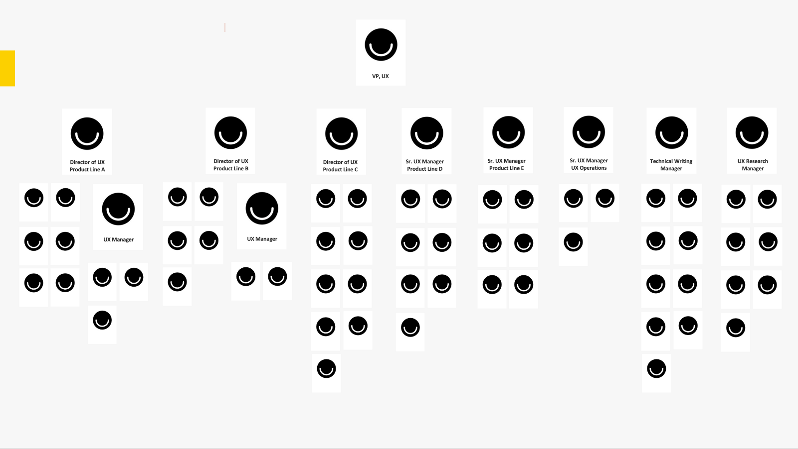
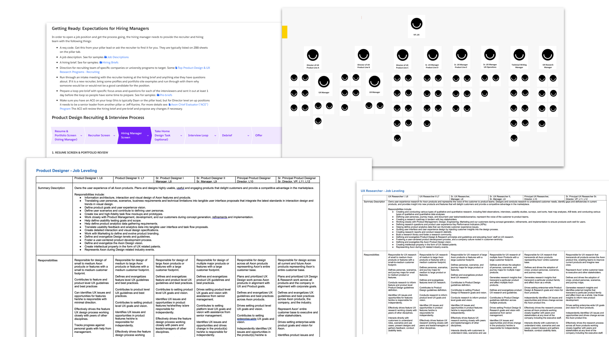
At Axon we worked relentlessly on envisioning the future of first responders. To frame our vision work and help the company get a clear joint vision, I worked with the executive team and external industry experts to develop a Policing Maturity Model.
AI and a connected ecosystem of devices, sensors and software applications running on the device or in the cloud will transform the first responder space in the next 10 years.
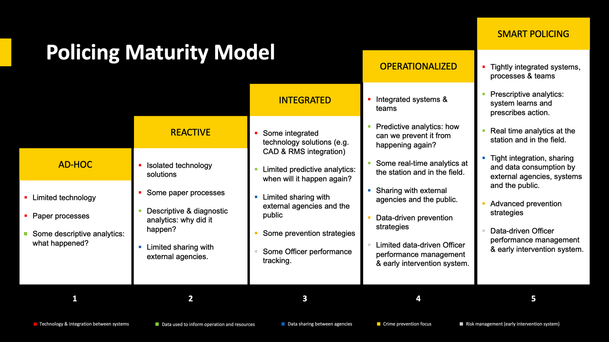
Using data and AI to propose a route for Police Officers to take during their shift.

Automatic number plate recognition and contextual information about the neighborhood in case the Officer decides to make a traffic stop.
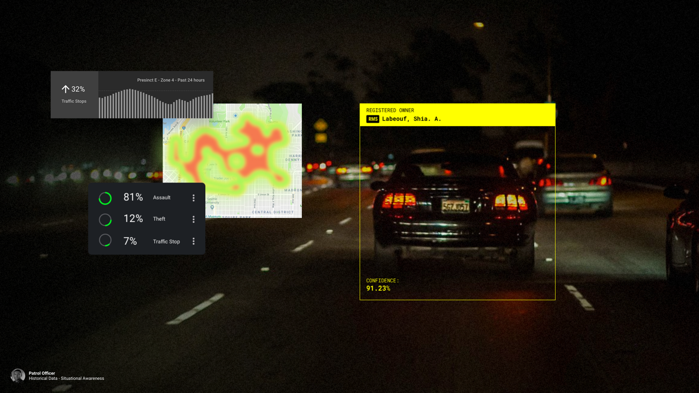
911 dispatch view with incident information and live streaming to provide situational awareness (top), and backup officer view heading to the scene (bottom).
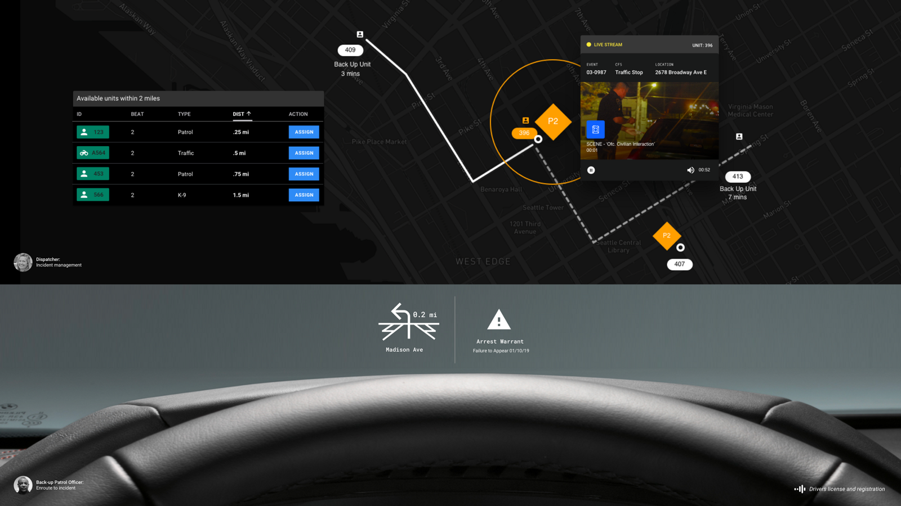
Automatically generated incident view aggregating all events and signals on a timeline for later viewing by detective or prosecution and defense.

Mobile view for remote situational awareness for additional first responders heading to the scene.

Tactical collaboration with all first responders and dispatch to manage the incident.

Incident timeline view for Detectives—navigate through an automatically generated timeline with annotations.

One of our major initiatives was transforming the digital evidence management experience. The redesign focused on simplifying complex workflows while maintaining the strict chain-of-custody requirements essential for legal proceedings.
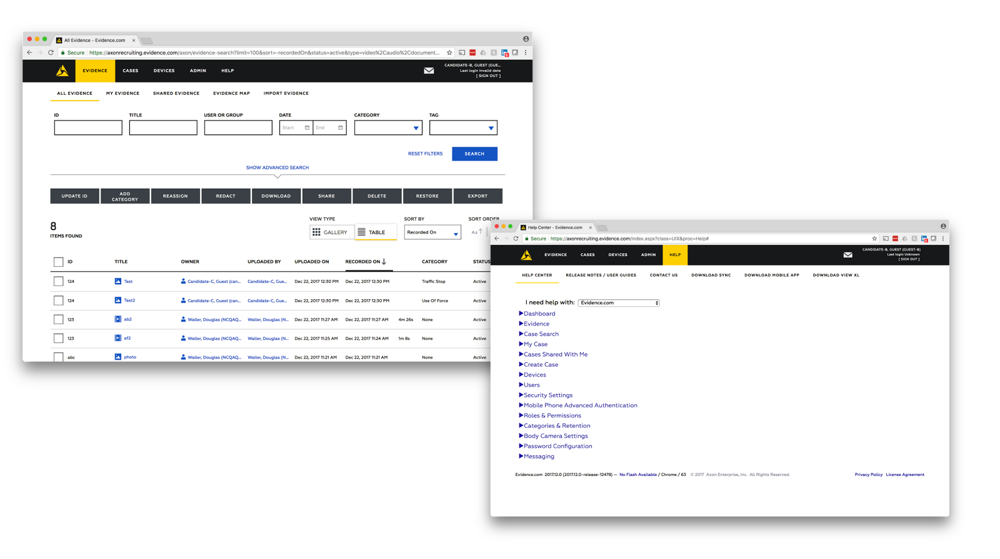
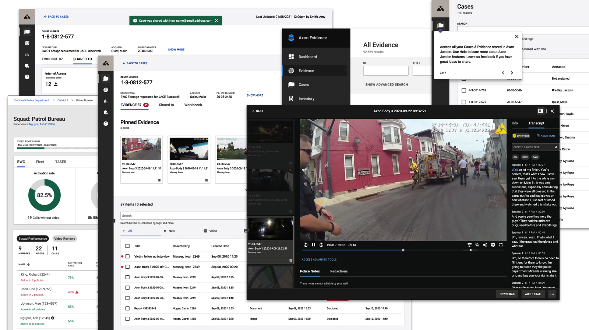
We designed and launched Axon Records, a modern records management system built to streamline the documentation process for law enforcement officers.
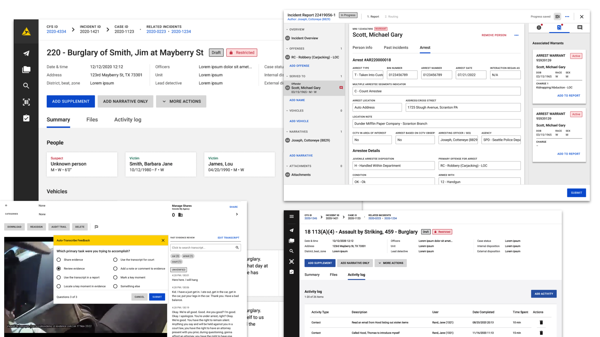
We built a 911 dispatch product line from the ground up. This includes all the software used when a 911 call comes in—gathering data, making decisions about resources to send, and coordinating all resources going out and on scene including real-time audio and video communication.
Since this is a very high stress situation, all applications and workflows need to be very easy to use and intuitive. A hard to use or inconsistent user experience can quite literally mean people die.
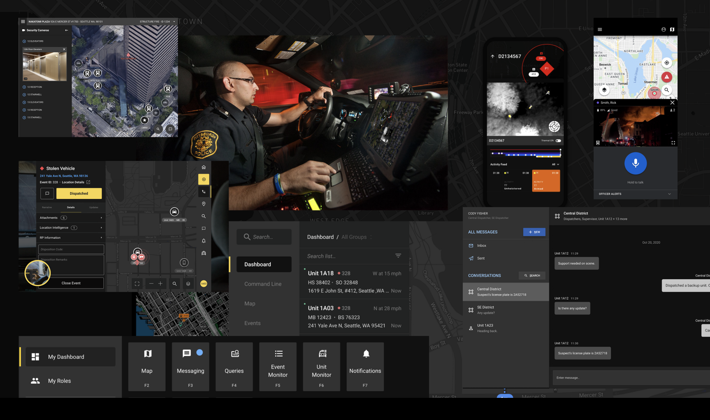
Axon has half a dozen mobile applications across various platforms. Here are samples with existing/live apps on the outside, and a vision for a real-time operations app in the middle.
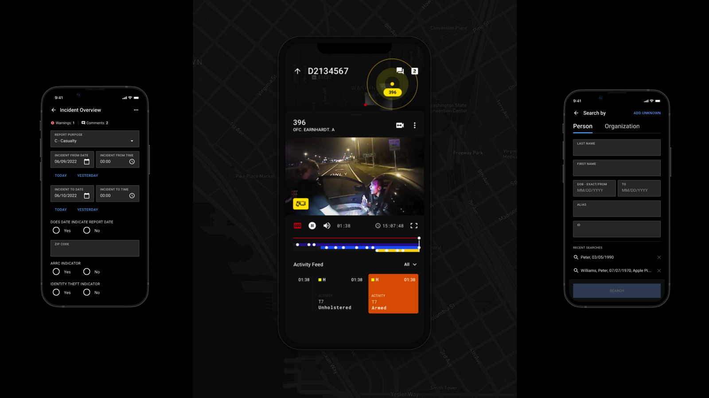
Many Axon products are a combination of one or more hardware devices with software applications used together. Here are examples of both the hardware and software working in harmony.

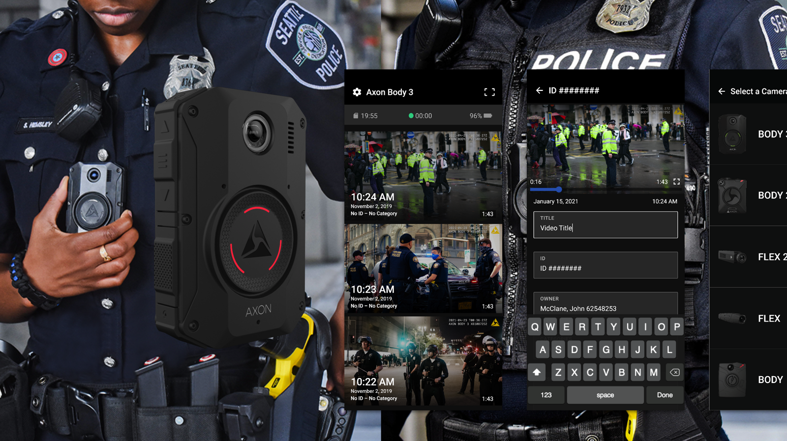
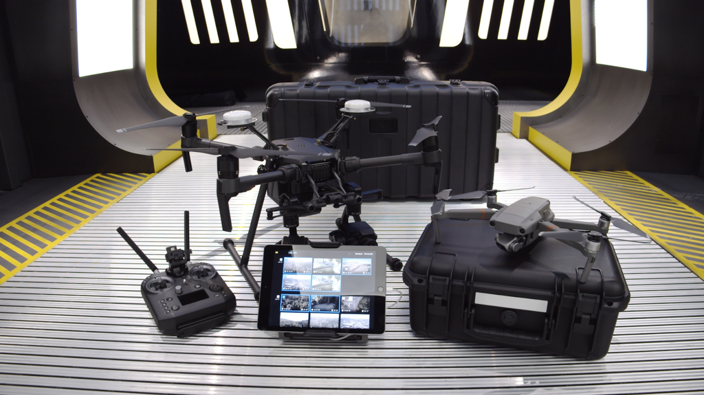

We make VR training for how to use our devices as well as how to approach situations (for example: encountering someone threatening self-harm). VR training retention is much higher than classroom training, making it an effective way to train Patrol Officers to better handle situations and equipment.

I built the first Design System at the company and created a Design Operations team to expand and evolve it over time. The Axon Design System governs interaction, visual, and workflow design across all products—including mobile, in-car/tablet and desktop form factors in both light and dark themes to accommodate for context.
This design system is used on the Design side in Figma as a library with version control and metrics across 40+ Product Designers, and on the Engineering side with a component library built and evolved by a centralized Engineering team. We set and track adoption goals and metrics across all product lines, reviewing them monthly.

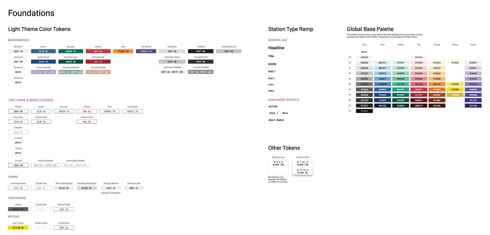

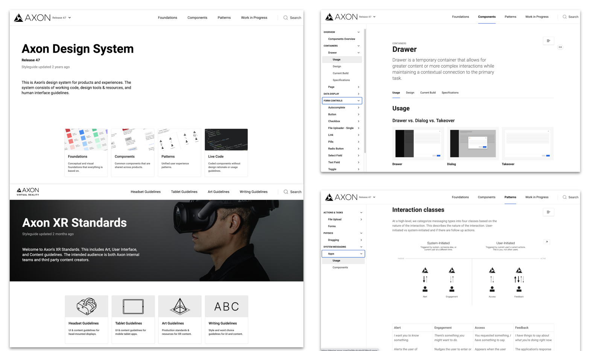
Examples of product branding work to tie together all the different Axon product lines into a cohesive portfolio.


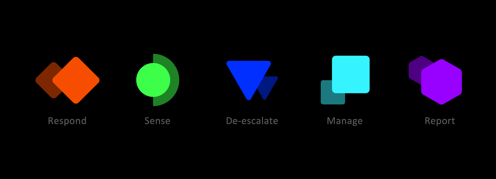